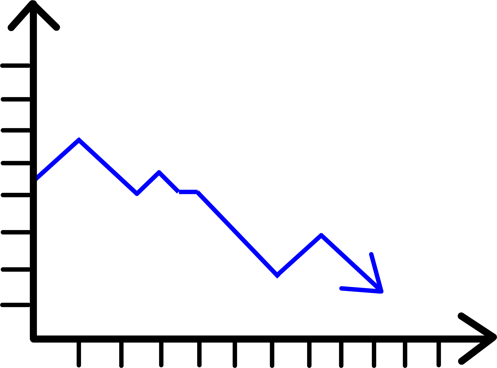

Starting a sprint
Sprint Planning
A sprint is a specified period of time dedicated to developing one product increment. At the start of each sprint the product owner and the team discuss which item from the Product Backlog to develop. The product owner decides which elements are most important. The team determines how much work is required to complete the development of the enhancement without accumulating technical debt. They put this in the Sprint Backlog. A Sprint Backlog usually requires some Backlog Refinement as Product Backlog Items (PBI) need to be completely understood by the team.

Daily Sprint
Everyday the team members meet and discuss the progress of the sprint for +/- 15 minutes. The team might keep a Daily Sprint Task List or a Sprint Burndown Chart, since additional tasks are often discovered during the development. A Sprint Burndown Chart is a chart depicting the total amount of work remaining within the Sprint and is updated daily to keep track of the progress. The Burndown Velocity is calculated by comparing the actual amount of hours worked on the Sprint to the estimated amount of hours worked on the Sprint and shows the daily average rate of productivity.

Sprint Review
At the end of a Sprint, the team members meet and inspect and demonstrate the product in order to get feedback from the stakeholders. They cross off elements from the Product Backlog that are considered finished. Elements that are not finished are moved back to the Product Backlog and ranked according to the product owner's priorities. This is called Backlog Grooming. After the Sprint Review, a Sprint Retrospective follows.